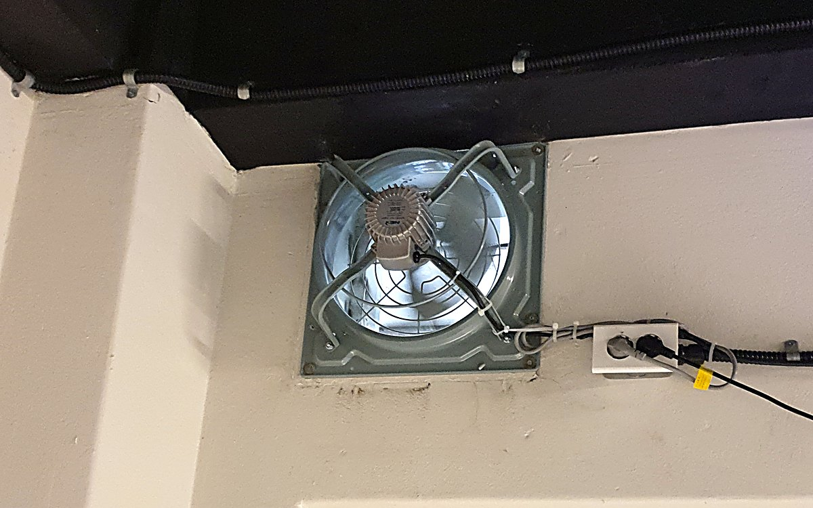
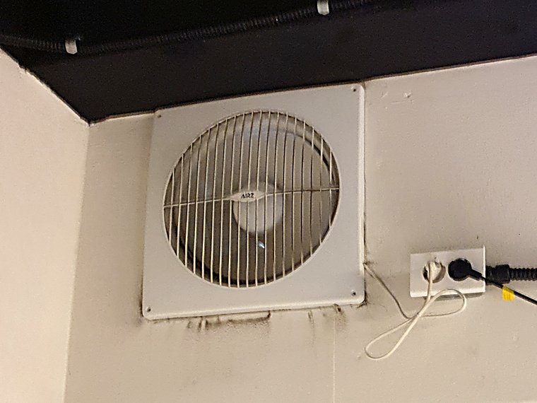
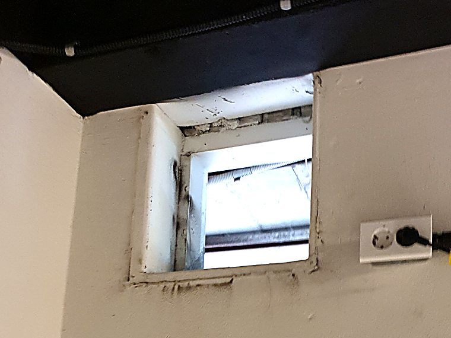
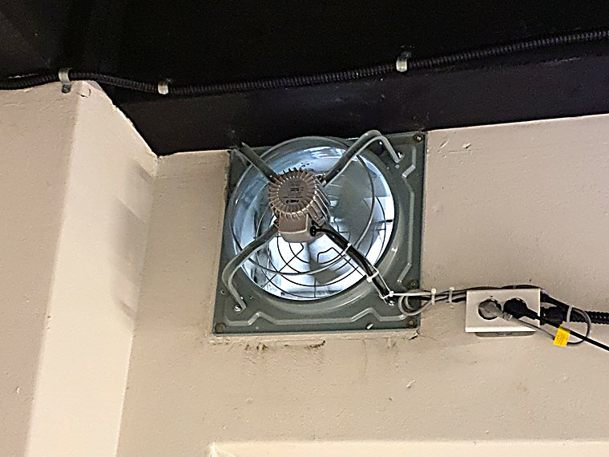

매장 환풍기 교체, 업소용 고압 환풍기로
욕실용 환풍기가 달려 있던 매장이었습니다. 돌아가기는 하는데 열기도 냄새도 빠지지 않는다는 말씀이었고, 실제로 그 크기의 팬으로는 감당이 안 되는 공간이었습니다. 같은 자리에 업소용 고압 환풍기로 바꿔 달았습니다.
- 현장
- 매장 · 상가
- 시공 내용
- 기존 환풍기 철거 · 고압 환풍기 교체
- 소요 시간
- 1명 · 1시간 20분
- 지역
- 경기 용인

교체 완료 — 출입문 상부에 설치된 업소용 고압 환풍기
환풍기가 도는데 왜 공기가 안 빠지나
환풍기 교체 문의 중에 가장 자주 듣는 말이 이것입니다. “고장 난 건 아닌데 소용이 없다”는 말씀입니다. 날개는 분명히 돌고 있고 소리도 납니다. 그런데 매장 안 열기는 그대로고 냄새도 남아 있습니다.
대부분은 고장이 아니라 급이 안 맞는 환풍기가 달려 있는 경우입니다. 이번 현장이 정확히 그랬습니다. 매장 벽에 달려 있던 것은 가정집 욕실에 쓰는 환풍기였습니다.
욕실용 환풍기는 두세 평 남짓한 공간에서 습기를 천천히 빼내라고 만든 물건입니다. 문을 닫아두면 공기가 갈 곳이 없으니, 약하게 오래 돌려도 결국은 빠집니다. 그 조건에 맞춰 설계된 것이라 잘못 만든 제품이 아닙니다. 매장에 달린 것이 문제일 뿐입니다.
매장은 조건이 완전히 다릅니다. 사람이 드나들고, 조명과 기기에서 열이 계속 나오고, 문을 열면 바깥 공기와 섞입니다. 빼내야 할 공기의 양 자체가 몇 배입니다. 여기에 욕실용을 달면 공기를 빼는 게 아니라 벽에 구멍이 하나 뚫려 있는 것에 가까운 상태가 됩니다.
시공 전 — 매장에 달려 있던 욕실용 환풍기
출입문 위쪽 벽면에 백색 플라스틱 환풍기가 붙어 있었습니다. 흔히 보는 가정용 벽부형입니다. 옆에는 기존 콘센트가 있어서 전원은 거기서 뽑아 쓰고 있었습니다.
사장님 말씀은 간단했습니다. 열기가 안 빠진다, 냄새도 오래 남는다. 특히 사람이 몰리는 시간에는 켜나 마나라는 것이었습니다.
현장에서 확인해 보니 팬 자체는 돌고 있었습니다. 다만 손을 대 보면 바람이 거의 느껴지지 않았습니다. 날개가 작고 회전력이 약하니 벽 두께를 통과해 바깥까지 밀어낼 힘이 없는 상태였습니다.
여기서 중요한 것이 하나 있습니다. 환풍기가 공기를 빼려면 벽을 지나 바깥으로 밀어내야 하는데, 그 과정에서 저항이 생깁니다. 벽이 두꺼울수록, 바깥에 바람이 불수록 저항은 커집니다. 이 저항을 이겨내는 힘을 정압이라고 부릅니다. 욕실용 환풍기는 이 정압이 낮게 설계되어 있습니다. 짧고 저항 없는 경로를 전제로 만들었기 때문입니다.

시공 전기존에 달려 있던 가정용 벽부형 환풍기
철거하고 보니 자리는 그대로 쓸 수 있었습니다
기존 환풍기를 떼어내면 그 뒤에 벽을 관통하는 개구부가 드러납니다. 교체 작업에서 가장 먼저 확인하는 것이 이 개구부의 크기와 상태입니다.
여기서 두 갈래로 갈립니다. 개구부가 새로 달 환풍기 규격과 맞으면 그대로 쓰면 되고, 작으면 넓혀야 하고, 너무 크면 판을 대서 메워야 합니다. 벽을 다시 손대는 순간 작업 시간과 비용이 달라집니다.
이 현장은 운이 좋은 쪽이었습니다. 개구부가 새로 달 고압 환풍기 규격과 맞아떨어져서 벽을 추가로 건드리지 않고 진행할 수 있었습니다. 안쪽 상태도 깨끗한 편이라 정리만 하고 바로 설치로 넘어갔습니다.

철거 후기존 환풍기를 떼어낸 상태 — 바깥이 보이는 관통 개구부
새로 단 것은 금속 프레임의 업소용 고압 환풍기입니다. 겉으로 가장 크게 다른 점은 날개입니다. 개구부를 거의 가득 채울 만큼 크고, 날개 각도가 공기를 밀어내는 쪽으로 잡혀 있습니다. 모터도 저항이 걸린 상태에서 회전수를 유지하도록 만들어진 것입니다.
본체를 개구부에 물려 고정하고 사방을 잡아 진동이 벽으로 전달되지 않게 했습니다. 산업용 팬은 힘이 센 만큼 고정이 부실하면 진동과 소음이 그대로 벽을 타고 퍼집니다.
전원은 옆에 있던 기존 콘센트를 그대로 활용했습니다. 배선은 천장 배관 라인을 따라 정리해 매장 안에서 눈에 거슬리지 않게 했고, 문을 여닫을 때 걸리는 곳이 없는지 확인했습니다.
철거부터 시운전까지 1명이 1시간 20분에 마쳤습니다. 개구부를 그대로 쓸 수 있었던 것이 시간을 줄인 가장 큰 이유입니다.
시공 완료
가동해 보면 차이는 손만 대봐도 압니다. 이전에는 근처에 손을 가져가도 바람이 잡히지 않았는데, 교체 후에는 빨려 들어가는 흐름이 분명하게 느껴집니다.
매장 공기가 실제로 돌기 시작하면 사장님이 먼저 알아채시는 부분이 있습니다. 문을 열었을 때 훅 끼치던 답답한 공기가 줄어드는 것입니다. 열기가 천장에 고여 있지 않으니 체감 온도도 달라집니다.
대신 소리는 커졌습니다. 이건 미리 말씀드리는 부분입니다. 힘이 센 팬은 조용할 수 없습니다. 그래서 종일 켜두는 방식보다 필요한 시간에 강하게 빼는 방식을 권해 드렸습니다. 손님이 몰리기 전, 그리고 영업이 끝난 뒤에 몇 분씩 돌리는 것만으로도 공기 상태가 유지됩니다.
마지막으로 가동 상태에서 진동과 소음, 배출 흐름을 함께 확인하고 마쳤습니다. 문을 여닫을 때 본체나 배선에 닿는 곳이 없는지도 다시 봤습니다.

시공 후교체 완료 — 개구부를 가득 채우는 금속 날개
이 현장의 핵심
- 고장이 아니라 매장에 안 맞는 욕실용 환풍기가 달려 있던 경우
- 벽을 밀어낼 힘(정압)이 부족하면 돌아도 공기가 안 나감
- 기존 개구부 규격이 맞아 벽을 다시 손대지 않고 교체
- 기존 콘센트 활용 · 배선은 천장 배관 라인 따라 정리
- 1명 · 1시간 20분 — 철거부터 시운전까지 당일 완료
- 소음은 커지므로 필요한 시간에 강하게 쓰는 방식으로 안내
자주 묻는 질문
기존에 뚫려 있던 자리를 그대로 쓸 수 있나요?
개구부 크기가 새 환풍기 규격과 맞으면 그대로 씁니다. 이번 현장이 그런 경우였고, 그래서 벽을 다시 손대지 않고 1시간 20분 만에 끝났습니다. 크기가 안 맞으면 개구부를 넓히거나 보강판을 대서 맞추는데, 이때는 시간이 더 걸리고 마감 작업이 따라붙습니다. 기존 환풍기를 정면에서 찍은 사진 한 장이면 어느 쪽인지 대개 판단됩니다.
고압 환풍기는 소리가 큰가요?
큽니다. 욕실용보다 확실히 시끄럽습니다. 공기를 세게 밀어내는 것이 목적인 장비라 조용할 수가 없습니다. 다만 매장에서는 종일 약하게 돌리는 것보다 필요할 때 몇 분 강하게 빼는 쪽이 실제로 더 효과가 있습니다. 소음이 부담되는 자리라면 설치 전에 말씀해 주시면 풍량을 한 단계 낮춰 잡거나 위치를 조정하는 방법을 같이 봅니다.
우리 매장에는 어떤 환풍기가 맞을까요?
면적과 천장 높이, 열이 나오는 기기가 무엇인지, 배기구에서 바깥까지 거리가 얼마나 되는지에 따라 달라집니다. 같은 평수라도 화구가 있는 곳과 없는 곳은 필요한 용량이 다릅니다. 기존 환풍기 사진과 매장 크기를 문자로 보내주시면 어느 정도 용량이 필요한지 먼저 알려드립니다.